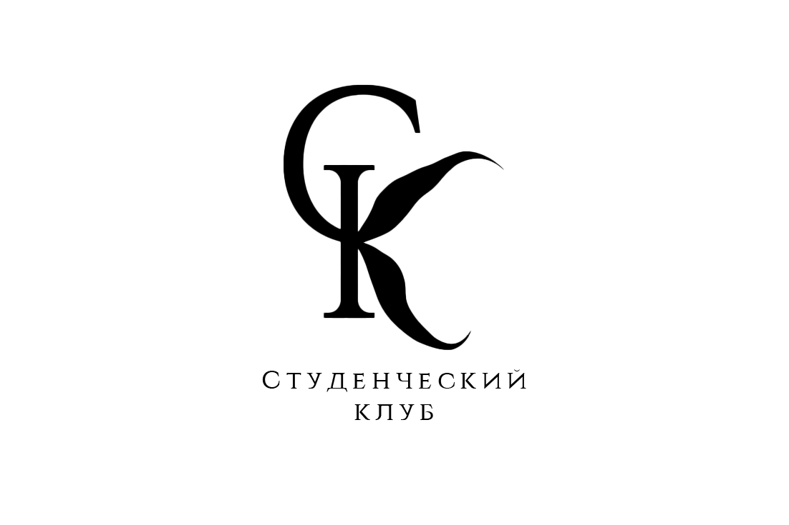

Чего боятся люди? Злости, обиды, одиночества, потерь или себя? Эта история о людях, об их страхах, болях, о том, что знают все, но о чем никто не говорит.
Истории порою, как письма, молчат и этим молчанием говорят намного большее. А что если письмо не дойдет до своего адресата? А отправитель решит, что его прощение или признание было и вовсе не нужным? А что если люди вообще перестанут верить в людей?
Эта тихая история не о грустном — она о человеческом тепле и счастье, о внутренней красоте, которою несет внутри себя каждый из нас…
Екатерина Парамошкина